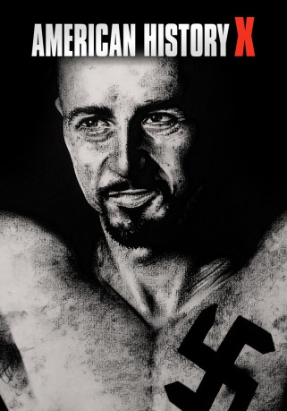

#1576 American History X
Auszeichnungen: für 1 Oscars nominiert
 
 IMDB-Wertung: 8.5 / 10
IMDB-Wertung: 8.5 / 10  IMDB-TOP-Platzierung: 34
IMDB-TOP-Platzierung: 34  Metascore: 62
Metascore: 62 
Dereks Leben ist geprägt von Hass - von rassistischem Hass, den er seit dem tragischen Tod seines Vaters fanatisch verfolgt. In seiner Clique aus Gleichgesinnten steigt er auf Grund seiner Intelligenz und seiner rhetorischen Fähigkeiten sehr schnell zum Anführer auf, unterstützt durch den Altnazi Cameron. Doch ein Gefängnisaufenthalt ändert seine Ansichten völlig. Während er sich dort vor Übergriffen seiner Kameraden schützen muss und zur Vernunft kommt, ist sein kleiner Bruder Danny auf dem besten Wege dahin, in den Nazisumpf abzugleiten und es seinem Vorbild Derek gleich zu tun.
Jahr: 1998
Dauer: 119 Minuten
FSK: 16
Land: USA Studio: New Line CinemaTonspuren:
Untertitel: Deutsch, Englisch,
Auflösung: 1080p (1920x1080) Größe: 13721 MB
Genre: Krimi, Drama
Regisseur: Tony Kaye
Drehbuch: David McKenna
Soundtrack: Anne Dudley
Darsteller:
 Edward Norton als Derek Vinyard
Edward Norton als Derek Vinyard Edward Furlong als Danny Vinyard
Edward Furlong als Danny Vinyard Beverly D'Angelo als Doris Vinyard
Beverly D'Angelo als Doris Vinyard- Jennifer Lien als Davina Vinyard
 Ethan Suplee als Seth Ryan
Ethan Suplee als Seth Ryan Fairuza Balk als Stacey
Fairuza Balk als Stacey- Avery Brooks als Dr. Bob Sweeney
 Elliott Gould als Murray
Elliott Gould als Murray Stacy Keach als Cameron Alexander
Stacy Keach als Cameron Alexander- William Russ als Dennis Vinyard
 Guy Torry als Lamont
Guy Torry als Lamont- Joe Cortese als Rasmussen
- Antonio David Lyons als Lawrence
- Alex Sol als Mitch McCormick
 Keram Malicki-Sánchez als Chris
Keram Malicki-Sánchez als Chris- Giuseppe Andrews als Jason
 Christopher Masterson als Daryl Dawson
Christopher Masterson als Daryl Dawson- Jordan Marder als Curtis
- Paul Le Mat als McMahon
- Thomas L. Bellissimo als Cop #2
- Cherish Lee als Kammi
- Tara Blanchard als Ally Vinyard
 Anne Lambton als Cassandra
Anne Lambton als Cassandra- Danso Gordon als Buddy #1
 Jim Norton als Randy
Jim Norton als Randy- Kiante Elam als Lawrence's Partner
- Keith Odett als Random Skinhead
- Paul E. Short als Stocky Buddy
- Nigel Miguel als Basketball Player
- Sydney 'Big Dawg' Colston als Prison Gang Leader , uncredited
- Allie Moss als Skinhead Girlfriend , uncredited
 Denney Pierce als Arresting Officer , uncredited
Denney Pierce als Arresting Officer , uncredited Glendon Rich als Deputy Sheriff , uncredited
Glendon Rich als Deputy Sheriff , uncredited- Sam Sarpong als Jail Inmate , uncredited
- Jason Bose Smith als Little Henry
- Michelle Christine White als Lizzy
- Jonathan Fowler Jr. als Jerome
- Nicholas R. Oleson als Huge Aryan
- Sam Vlahos als Dr. Aguilar
- Steve Wolford als Reporter
- Richard Noyce als Desk Sergeant
- David Basulto als Guard
- Alexis Rose Coen als Young Ally Vinyard
- Paul Hopkins als Student
- Robert 'Duckie' Carpenter als Skinhead , uncredited
- Hans Cozzens als Police Officer #2 , uncredited
- John Embry als Parking Lot Skinhead , uncredited
- Maximillian Kesmodel als Young Danny Vinyard , uncredited
- Barbie Marie als Student , uncredited
- Louis E. Rosas als Jail Inmate , uncredited
Datei: X:\1998\American History X (1998, FSK16, 1920x1080).mkv seit 23.07.2015
Festplatte: HD 1996-2002
 Es gibt insgesamt 86 Filme in der Gruppe '1998'
Es gibt insgesamt 86 Filme in der Gruppe '1998'